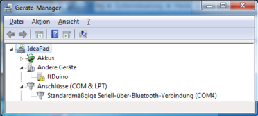
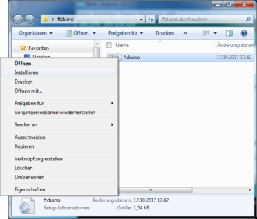
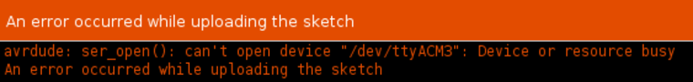
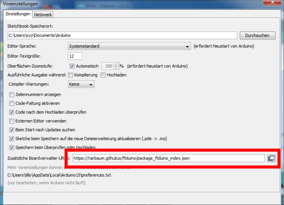
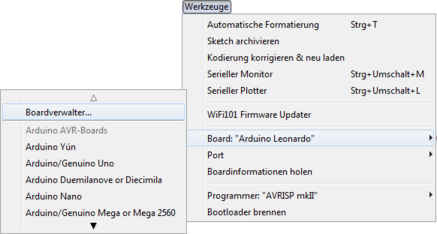
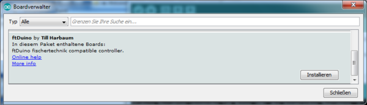
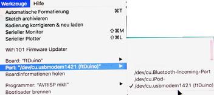
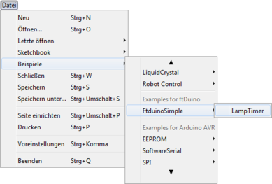

Abbildung 2.9: Auswahl des ftDuino-Boards unter Windows
| 1. Controller | - | 2. Installation | - | 3. Erste Schritte | - | 4. Programmierung | - | 5. Schule | - | 6. Experimente | - | 7. Modelle | - | 8. Community | - | 9. Bibliotheken | - | 10. Aufbau | - | Anhang |
Die Installation der Software zur Benutzung des ftDuino erfolgt in mehreren Schritten. Zu allererst muss der Computer mit dem ftDuino bekannt gemacht werden, in dem ein passender Treiber dafür sorgt, dass der Computer erfährt wie er mit dem ftDuino zu kommunizieren hat.
Im zweiten Schritt wird dann die sogenannte Arduino-IDE installiert, also die eigentliche Programmierumgebung sowie die Arduino-IDE mit dem ftDuino verbunden.
Für die Installation und auch für die im Kapitel 3 folgenden ersten Schritte reicht es, den ftDuino per USB mit dem PC zu verbinden. Eine zusätzliche Stromversorgung per Netzteil oder Batterie ist erst nötig, wenn die Ausgänge des ftDuino verwendet werden sollen.
Unter den meisten Betriebssystemen wird der ftDuino vom Computer direkt erkannt, sobald er angesteckt wird. Das trifft unter anderem auf Linux, MacOS X und Windows 10 zu, aber nicht für Windows 7.
Die Verwendung des ftDuinos unter Windows 10 erfordert keine Treiberinstallation durch den Anwender.
Sobald der ftDuino an einen PC unter Windows 10 angesteckt wird werden die passenden Treiber automatisch installiert. Windows 10 zeigt dies beim ersten Anschließen des ftDuino durch eine entsprechende Meldung am unteren rechten Bildschirmrand an. Nach einigen Sekunden ist die Installation abgeschlossen und der ftDuino benutzbar.
Weiteres An- und Abstecken erzeugt keine weiteren Meldungen, allerdings ist die erfolgreiche Erkennung des ftDuino unter Windows 10 jederzeit an der typischen Melodie zu erkennen, die ein Windows-PC beim Erkennen von Hardware ausgibt.
Die Treiberinstallation unter Windows 8.1 ist recht undankbar. Und falls möglich sollte auf Windows 10 ausgewichen werden.
Das Problem unter Windows 8.1 ist die Tatsache, dass die .inf-Datei unter https://harbaum.github.io/ftduino/ftduino/driver/ftduino.inf nicht von Microsoft signiert wurde und Windows 8.1 es dem Benutzer deutlich schwerer als z.B. Windows 7 macht, einen nicht-signierten Treiber zu installieren. Das ist in diesem Fall besonders ärgerlich, da es sich beim eigentlichen Treiber über eine bereits von Microsoft mitgelieferte Komponente handelt und die .inf-Datei Windows 8.1 lediglich auffordert, diese auch zu benutzen. Der eigentliche Treiber kommt von Microsoft und ist entsprechend signiert.
Diverse Anleitungen im Internet zur Installation nicht-signierter Treiber sind unter dem Suchbegriff ``windows 8.1 nicht signierte treiber installieren'' leicht zu finden. Im folgenden sind die wesentlichen Schritte kurz zusammengefasst:
Windows 7 und Windows Vista bringen den passenden Treiber ebenfalls bereits mit. Allerdings muss eine passende .inf-Datei geladen werden, um dafür zu sorgen, dass Windows diesen Treiber für den ftDuino nutzt.
Dass kein Treiber geladen ist erkennt man u.a. daran, dass der ftDuino im Gerätemanager unter ``Andere Geräte'' aufgeführt wird.

Abbildung 2.1: ftDuino ohne passenden Treiber unter Windows 7
Die .inf-Datei ist unter https://harbaum.github.io/ftduino/ftduino/driver/ftduino.inf zu finden.
Nach dem Download reicht ein Rechtsklick auf die Datei und die Auswahl von ``Installieren'' im folgenden Menü.

Abbildung 2.2: Rechtsklick auf ftduino.inf
Windows bietet daraufhin an, den Treiber zu installieren.
|
|
Ggf. erfolgt noch eine Sicherheitsabfrage. Dieser Frage kann man getrost zustimmen, da der eigentliche Treiber bereits Teil von Windows 7 bzw. Windows Vista ist. Die ftduino.inf-Datei fordert Windows lediglich auf, ihn zu verwenden.
Sobald die Installation erfolgreich war wird der ftDuino als sogenannter COM:-Port eingebunden.
|
|
Je nach Betriebsmodus des ftDuino und je nach installierter Anwendung auf dem ftDuino befindet er sich im Anwendungsmodus oder im Bootloader. Windows unterscheidet zwischen beiden Zuständen und weist zwei unterschiedliche COM:-Ports zu. Das ist so gewollt und soll nicht weiter irritieren. In den meisten Fällen wird der Benutzer nur den Anwendungsmodus zu sehen bekommen.
Der ftDuino wird von einem handelsüblichen Linux-PC ohne weitere manuelle Eingriffe erkannt. Da er das sogenannte ``Abstract Control Model'' (ACM) implementiert taucht er im Linux-System unter /dev/ttyACMX auf, wobei X eine fortlaufende Nummer ist. Sind keine weiteren ACM-Geräte verbunden, so wird der ftDuino als /dev/ttyACM0 eingebunden.
Mehr Details erfährt man z.B. direkt nach dem Anstecken des ftDuino mit dem dmesg-Kommando:
$ dmesg
...
[15822.397956] usb 3-1: new full-speed USB device number 9 using xhci_hcd
[15822.540331] usb 3-1: New USB device found, idVendor=1c40, idProduct=0538
[15822.540334] usb 3-1: New USB device strings: Mfr=1, Product=2, SerialNumber=3
[15822.540336] usb 3-1: Product: ftDuino
[15822.540337] usb 3-1: Manufacturer: Till Harbaum
[15822.541084] cdc_acm 3-1:1.0: ttyACM0: USB ACM device
Die genauen Meldungen variieren von System zu System, aber der
generelle Inhalt wird vergleichbar sein.
Weitere Details zum erkannten USB-Gerät liefert das lsusb-Kommando:
$ lsusb -vd 1c40:0538
Bus 003 Device 009: ID 1c40:0538 EZPrototypes
Device Descriptor:
bLength 18
bDescriptorType 1
bcdUSB 2.00
bDeviceClass 239 Miscellaneous Device
bDeviceSubClass 2 ?
bDeviceProtocol 1 Interface Association
bMaxPacketSize0 64
idVendor 0x1c40 EZPrototypes
idProduct 0x0538
...
Diese Ausgaben sind besonders interessant, wenn man wie in Abschnitt
6.10 oder 6.16 beschrieben die erweiterten
USB-Möglichkeiten des ftDuino nutzt.
Auch wenn Linux bereits den eigentlichen Gerätetreiber mitbringt kann es trotzdem nötig sein, die Systemkonfiguration anzupassen. Das Symptom ist, dass es beim Versuch, auf den ftDuino zuzugreifen, in der Arduino-IDE zu der folgenden Fehlermeldung kommt.

Abbildung 2.5: Fehlermeldung bei installiertem ModemManager
In diesem Fall ist die wahrscheinlichste Ursache, dass der ModemManager, ein Programm zur Bedienung von Modems, installiert ist und sich mit dem ftDuino verbunden hat. Um zu verhindern, dass der ModemManager versucht, sich mit dem ftDuino zu verbinden, ist die Eingabe des folgenden Kommandos nötig:
sudo wget -P /etc/udev/rules.d https://raw.githubusercontent.com/harbaum/ftduino/master/ftduino/driver/99-ftduino.rules
Die Datei /etc/udev/rules.d/99-ftduino.rules muss danach exakt folgenden Inhalt haben:
ATTRS{idVendor}=="1c40" ATTRS{idProduct}=="0537", ENV{ID_MM_DEVICE_IGNORE}="1"
ATTRS{idVendor}=="1c40" ATTRS{idProduct}=="0538", ENV{ID_MM_DEVICE_IGNORE}="1", MODE="0666"
Danach muss der ftDuino einmal kurz vom PC getrennt und wieder
angesteckt werden und sollte in der Folge ohne Probleme zu verwenden
sein.
Das Kommando legt eine Datei namens /etc/udev/rules.d/99-ftduino.rules an. Diese Datei enthält Regeln, wie der Linux-Kernel mit bestimmten Ereignissen umgehen soll. In diesem Fall soll beim Einstecken eines USB-Gerätes mit der Hersteller-Identifikation 1c40 und den Geräteidentifikationen 0537 und 0538 dieses vom ModemManager ignoriert werden. Zusätzlich werden die Zugriffsrechte auf das USB-Gerät etwas ausgeweitet, so dass der in Abschnitt 6.18.1 beschriebene Zugriff aus dem Web-Browser funktioniert.
In einigen Linux-Setups reicht die Installation der Datei nicht, um den ModemManager von seinen Störungen abzuhalten. In dem Fall hilft es, den ModemManager zu deaktivieren, auf den in der Regel problemlos verzichtet werden kann. Das folgende Kommando stoppt den ModemManager auf vielen gängigen Linux-Installationen bis zu nächsten Systemstart:
sudo systemctl stop ModemManager.service
Bringt das Kommando den erwünschten Effekt, dann kann die Einstellung
mit dem folgenden Kommando dauerhaft gemacht werden:
sudo systemctl disable ModemManager.service
Der ModemManager wird dann auch nach einem Systemstart nicht wieder
gestartet.
Die integrierte Entwicklungsumgebung (IDE) für den Arduino bekommt man kostenlos für die gängigsten Betriebssysteme unter https://www.arduino.cc/en/Main/Software. Die Windows-Version mit eigenem Installer ist dort z.B. direkt unter dem Link https://www.arduino.cc/download_handler.php erreichbar. Diese Arduino-IDE wird zunächst installiert.
Um den ftDuino unter der Arduino-IDE nutzen zu können muss eine entsprechende Konfiguration vorgenommen werden. Die Arduino-IDE erlaubt es, diesen Vorgang weitgehend zu automatisieren.
Für die einfache Installation zusätzlicher Boards bringt die Arduino-IDE den sogenannten Boardverwalter mit. Zunächst muss dem Boardverwalter in den Arduino-Voreinstellungen mitgeteilt werden, wo die ftDuino-Konfiguration zu finden ist.
Dazu trägt man https://harbaum.github.io/ftduino/package_ftduino_index.json in den Voreinstellungen wie folgt ein. Beim Eintragen der entsprechende Zeile ist darauf zu achten, dass die URL Unterstriche (_) enthält, die ggf. beim Kopieren (Copy'n Paste) der URL aus diesem PDF-Dokument verloren gehen. In diesem Fall sollte die URL manuell eingegeben werden.

Abbildung 2.6: URL der ftDuino-Konfiguration in den Arduino-Voreinstellungen
Den eigentlichen Boardverwalter erreicht man danach direkt über das Menü der IDE unter Werkzeuge ► Board: ... ► Boardverwalter....

Abbildung 2.7: Den Boardverwalter startet man aus dem Menü
Nachdem die JSON-Datei in den Voreinstellungen eingetragen wurde bietet der Boardverwalter automatisch die ftDuino-Konfiguration an.

Abbildung 2.8: Im Boardverwalter kann das ftDuino-Board installiert werden
Durch Klick auf Installieren... werden alle für den ftDuino nötigen Dateien automatisch heruntergeladen und installiert.
Nach erfolgreicher Installation kann der ftDuino unter den Boards ausgewählt werden.
Abbildung 2.9: Auswahl des ftDuino-Boards unter Windows
Ist bereits ein ftDuino angeschlossen und wurde der nötige Treiber installiert, so lässt sich der ftDuino nun unter Port auswählen.

Abbildung 2.10: Auswahl des Ports unter MacOS
Die Installation ist damit abgeschlossen. Während der Installation wurden bereits einige Beispielprogramme installiert. Diese finden sich im Menü unter Datei ► Beispiele ► Examples for ftDuino.

Abbildung 2.11: Beispiele zum ftDuino-Board
Diese Beispiele können direkt geladen und auf den ftDuino hinuntergeladen werden.
Die Arduino-IDE benachrichtigt automatisch über Softwareupdates der ftDuino-Konfiguration. Mit wenig Aufwand bleibt man so immer auf dem aktuellen Stand.
| ftDuino manual - installation | (c) 2017-2019 Till Harbaum |